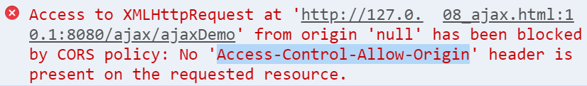
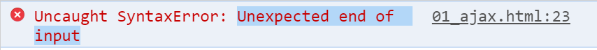
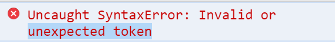

一.Dom操作(简单dom操作)
ajax提交请求，不需要使用form表单
但是，form表单自带收集数据的功能
不使用form标签，就没有自动收集数据的功能了
我们需要自己手敲代码，收集数据
使用dom技术
1.完整的javascript的组成
①js核心，ECMA Script 6
②Dom:Document Object Model 文档对象模型
③Bom:Browser Object Model 浏览器对象模型
2.使用js的Dom获取页面某个元素
①获取元素对象
1.使用元素的id获取对象
var elem=document.getElementById("id");
②通过对象，获取元素的内容/值
双标签中间的东西，叫内容
单标签的value，叫值
获取内容，使用dom对象的innerHTML属性
获取：var res=elem.innerHTML;
设置：elem.innerHTML="abc";
获取值，使用dom对象的value属性
③使用dom操作的进阶
获取对象的方案进阶
1.不使用id就能获取对象(后期xml中要使用)
通过标签名称获取当前页面中所有的该标签的元素，通过下标，获取某一个元素
var elem=document.getElementsByTagName("div")[0];
2.使用id获取对象的简写方式，ES6支持的写法
直接使用id代表对象
< div id="d1" >测试文本1< /div >
var res=d1.innerHTML;
练习：01_ex.html 一个div，一个input-text,button
需求，点击按钮，把input-text中填入的文本
显示到div上
对于innerHTML的进阶
innerHTML是可以改变html的结构的
< div id="d1" >
< a href="" >123< /a >
< /div >
< script>
console.log(d1.innerHTML);
//innerHTML是可以改变html的结构的
d1.innerHTML+="< h1 >abc< /h1 >"
< /script >
④事件
通过用户的行为来激发的操作，就是事件
用户发生一个行为，这个行为绑定的方法就会被调用
button的事件
onclick 单击事件
文本框和密码框
onblur 焦点移除事件
onfocus 获取焦点事件
body标签的事件
onload 页面加载完成后，马上调用js方法
练习
03_ex.html
1.页面中创建如下元素
文本框 uname
密码框 upwd
重复验证密码框 cpwd
在上面三个元素后面各创建一个span（3个span）
2.需求
1.文本框获取焦点时，span提示用户名6~10位
失去焦点时，非空验证，显示span中
2.密码框同上
3.cpwd失去焦点时，判断与upwd的值是否一致，提示写在span中
二.Ajax
1.同步Synchronous
在一个任务进行的过程中，不能开启其它任务
同步访问：浏览器在向服务器发送请求时，浏览器只能等待服务器响应，不能做其他事
同步访问的出现场合：
1.地址栏输入url，是同步访问
2.a标签跳转
3.form提交
2.异步Asynchronous
在一个任务开启时，可以进行其它的任务
异步访问：浏览器在向服务器发送请求时，用户可以在页面上做其它的操作
使用异步的场合：
1.用户名重复的验证
2.聊天室
3.百度搜索建议
4.股票走势图
3.什么是ajax
Asynchronous JavaScript And XML
异步的 js 和 xml
本质：使用js提供的异步对象，
异步的向服务器发送请求，
并接收响应回来的数据
异步对象 XMLHttpRequest
4.使用ajax
1.创建异步对象
2.创建请求
3.发送请求
4.接收响应数据
①创建异步对象
var xhr=new XMLHttpRequest();
这种创建方式，不兼容IE8以下的版本
下面是兼容ie8以下版本的创建方式
if(window.XMLHttpRequest){
//如果有这个属性，说明是IE8以上的浏览器
var xhr=new XMLHttpRequest();
}else{
//如果没有这个属性,说明是IE8以下的浏览器
var xhr=new
ActiveXObject("Microsoft.XMLHttp");
}
②创建请求，打开连接
xhr.open(method,url,isAsyn);
method：string类型，请求的方法
url:string类型，请求的url
isAsyn:boolean，是不是要采用异步的方式提交请求
③发送请求
xhr.send(formdata);
注意：只有post请求，才有请求主体formdata
get方法不需要请求主体。
所以使用get请求的时候，有两种发送请求的写法
xhr.send(),xhr.send(null)
④接收响应
1.xhr.readyState属性
用于表示xhr对象的 请求状态
一共有5个状态
0：请求尚未初始化
1：已经打开连接，请求正在发送中
2：接收响应头
3：接收响应主体
4：接收响应数据成功
2.xhr.onreadystatechange监听
监听xhr.readyState值的改变，每改变一次，方法会调用一次，一共会调用4次。
注意：只有当xhr.readyState=4的时候，是我们要接收响应正确时刻
3.xhr.status响应状态码
只有响应状态码为200的，我们才接收响应
4.响应数据放在了xhr.responseText属性中
xhr.onreadystatechange=function(){ if(xhr.readyState==4&&xhr.status==200){ var result=xhr.responseText;
console.log(result);
}
}
5.带参数的get请求
注意：
1.服务器中的get接口，可以使用浏览器地址栏验证
2.跨域错误

把ajax的html文件放入node服务器的静态资源中托管，使用访问服务器的方式打开页面
3.大括号缺失

4.没有错误信息的错误
使用console.log在不同位置打桩观察
5.错误的符号
